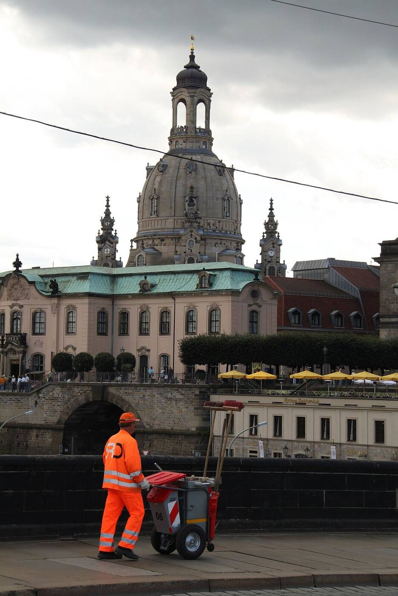

We're Holperfrei.
Computer science students from TU Dresden. Holperfrei is German for free of bumps, which is what we want Dresden's streets to be.

Why we start in Dresden
Every morning we ride over the same cracks on the way to campus, and we watch them turn into potholes by spring.
We live here
We know the streets, and the city already runs a Smart City project with TU Dresden.
The trucks are already here
The city owns its waste company, so the road department and the fleet are one call apart.
The city needs the data
Dresden is building open-source road software. We can feed it every week.
One success travels
Leipzig, Chemnitz and smaller towns trust what Dresden already uses.
The plan
- 2027
Pilot in one Dresden district, funded by grants.
- 2028
First paying cities and towns in Saxony.
- 2030
Subscriptions cover our costs.
- 2031
Over 100 cities, and road data for insurers and map apps.
What we're looking for
A pilot district
A road department in Dresden that wants to see its streets every week.
A fleet partner
A waste company, or a bus or delivery fleet, to carry the first camera boxes.
Mentors and funding
People who know public tenders, and support for our EXIST application.
Talk to us after the pitch, or find us at the Faculty of Computer Science, TU Dresden.